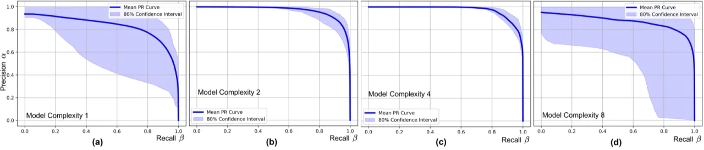
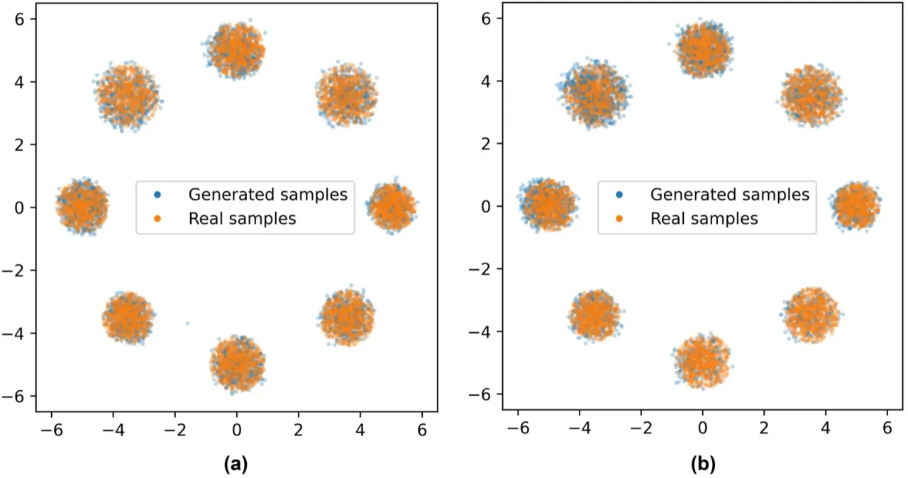
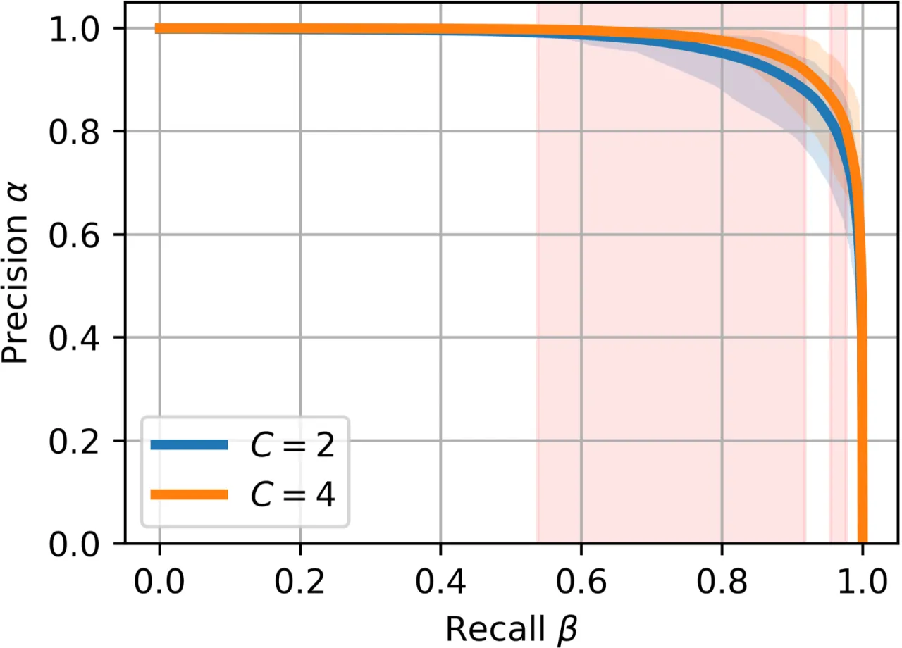
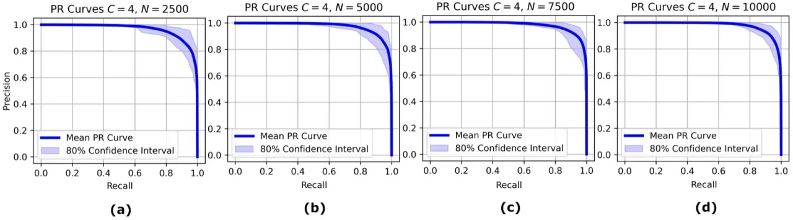

现有生成模型评估方法只关注学习分布与目标分布之间的"距离"，却从未量化该测量本身的置信度。 本文形式化了"生成模型学习中的不确定性量化"问题，并提出以集成 Precision-Recall 曲线为核心工具， 通过多次独立训练的模型来捕获模型近似目标分布时的不确定性区间。
生成模型（Generative Models）已广泛应用于粒子物理、天气预报、医疗等高风险领域。 然而，现有所有评估指标——FID、IS、Precision-Recall 等——仅测量学习分布与目标分布的"距离"， 却完全忽视了这种测量本身蕴含的不确定性。一旦分布对齐偏差微小，就可能导致错误的科学结论或不可靠的预测。
"No work quantifies the confidence in the measured closeness between the learned and target distributions." —— 论文原文

本文并非提出一个完整算法，而是建立形式化框架并推荐集成 Precision-Recall 曲线作为量化工具： 对同一训练集用不同随机初始化独立训练 M 个模型，为每个模型绘制 PR 曲线， 然后在统一的 recall 网格上插值并统计百分位区间，以直观展示评估置信度。
作者将模型诱导不确定性（model-induced uncertainty）定义为不同初始化下分布度量指标的方差：
𝒰_model = 𝔼[𝔻(P_r, P_g^(θ))²] − 𝔼[𝔻(P_r, P_g^(θ))]²
进一步，总评估不确定性（total evaluation uncertainty）同时纳入模型初始化的随机性与有限采样引入的噪声， 是生成模型可靠性评估的完整度量目标。
具体做法：训练 M 个独立的生成模型 → 生成各自的 PR 曲线 → 在公共 recall 网格上插值 → 计算每个 recall 点的 10th–90th 百分位置信带。 采用百分位区间而非标准差区间，是为了更好地处理小 ensemble 下的偏斜分布与离群值问题。

在模型比较场景下，作者引入配对 t 检验（paired t-test）， 对两组 M 个模型的 PR 曲线在每个 recall 值处进行统计比较， 以检验两种配置是否存在显著性差异，为工程决策提供统计依据。
实验在合成截断高斯环形分布（20,000 个样本）上训练 DDPM， 通过控制残差块数量 C ∈ {1, 2, 4, 8} 模拟欠拟合至过拟合的连续谱， 并通过改变数据集大小（5,000 / 20,000）验证数据量对评估不确定性的影响。

| 模型配置 | 置信区间宽度 | 结论 |
|---|---|---|
| C=1（单残差块） | 最宽 | 欠拟合，高 model uncertainty |
| C=2 | 最窄之一 | 最优复杂度候选 |
| C=4 | 最窄之一 | 最优复杂度候选，统计上优于 C=2 |
| C=8 | 较宽 | 过拟合迹象，不确定性上升 |

生成集成 PR 曲线需要训练 M 个独立模型，对于复杂生成任务而言"computationally prohibitive"。 尽管作者认为在可靠性关键应用中此开销是合理的，但大规模实际部署仍面临挑战。
方法依赖基于 kNN 的估计器在某特征空间中计算距离。 论文指出 "the diagnostic depends on the feature space used to compute distances for the kNN-based estimator"， 在高维数据（如图像）中需要预训练特征提取器，选择不同特征空间会影响结论。
百分位带可视化虽然实用，但缺乏形式化保证。 配对 t 检验假设成对差值近似正态，且在不同 recall 值上的多重检验需要校正或采用非参数置换检验替代。 M=30 的 ensemble 大小对假设检验是标准选择，但"bootstrap or permutation methods are safer for small ensemble sizes"。
本文实验仅限于简单合成分布（二维高斯环）。 作者承认将方法迁移到高维图像数据，以及 GAN、VAE、Flow-based 等不同模型族时， "the nature and magnitude of evaluation uncertainty might differ significantly"，尚待验证。